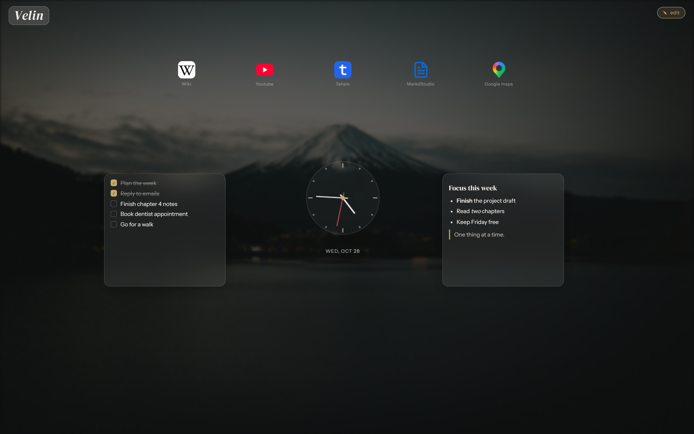
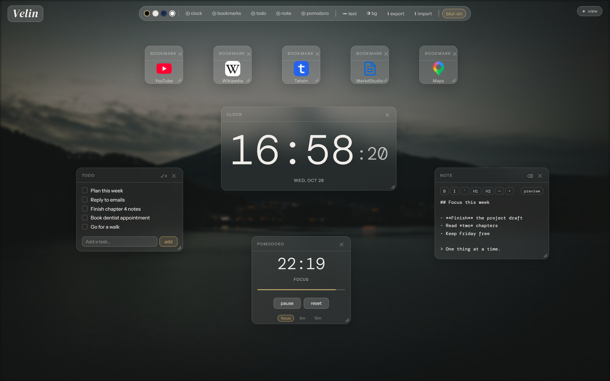
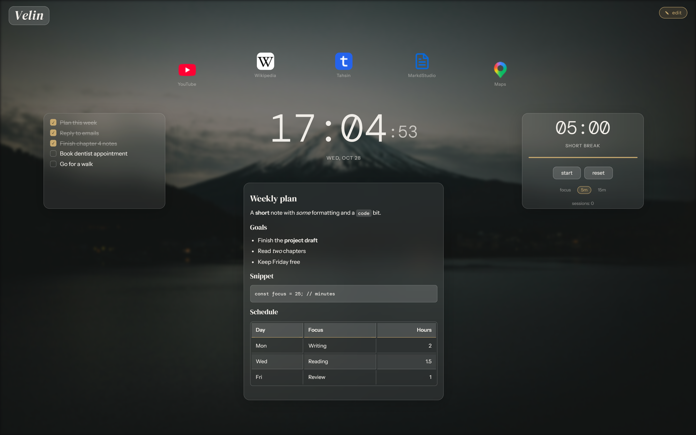
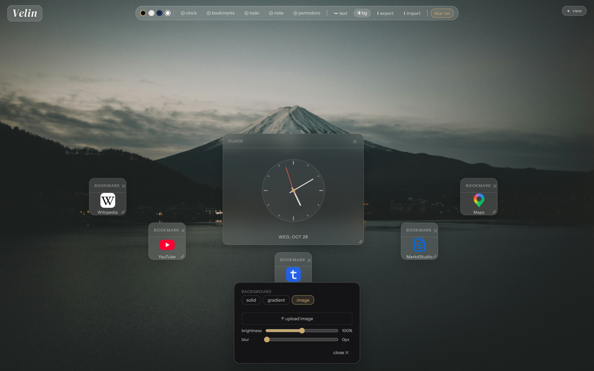

Make your new tab yours.
Velin is a start page for your browser. Add widgets, write markdown notes, pin bookmarks and pick a background. It all saves in your browser, with no account and no sync server.
Free to use, with the source on GitHub. The extension works in Chrome, Edge and Brave. Using another browser? The guide has options.

What's in it
Widgets you arrange yourself
Clock, bookmarks, todo, notes and a pomodoro timer. Drag a widget by its header, resize it from the corner, and it stays where you left it. The pomodoro keeps running across tabs.

Markdown notes
A note widget is a small markdown editor with a live preview: headings, bold and italic, code, links, lists and tables.

Your own background
Solid colors, gradients, or an image of your own, with brightness and blur sliders.

- View and edit modesPress E to lock everything in place, or unlock it to rearrange.
- Free-floating textPlace text anywhere on the canvas.
- Export and importSave everything to one JSON file and load it back anywhere.
- No build stepFour files. Open
app.htmland it works.
Use it your way
Velin's extension
Chrome, Edge and Brave. Velin becomes your new tab and loads from files on your computer.
Install stepsAnother extension
Any browser. A new-tab extension or a browser setting sends new tabs to the web version.
See the optionsJust the website
No setup at all. Open it when you want it, or bookmark it.
Open VelinEverything stays in your browser
Widgets, notes, bookmarks and background images are stored in your browser's IndexedDB. There's no account and no Velin server.
Two things do reach the network: fonts load from Google Fonts, and bookmark icons are looked up through DuckDuckGo's icon service (then the site's own favicon as a fallback).